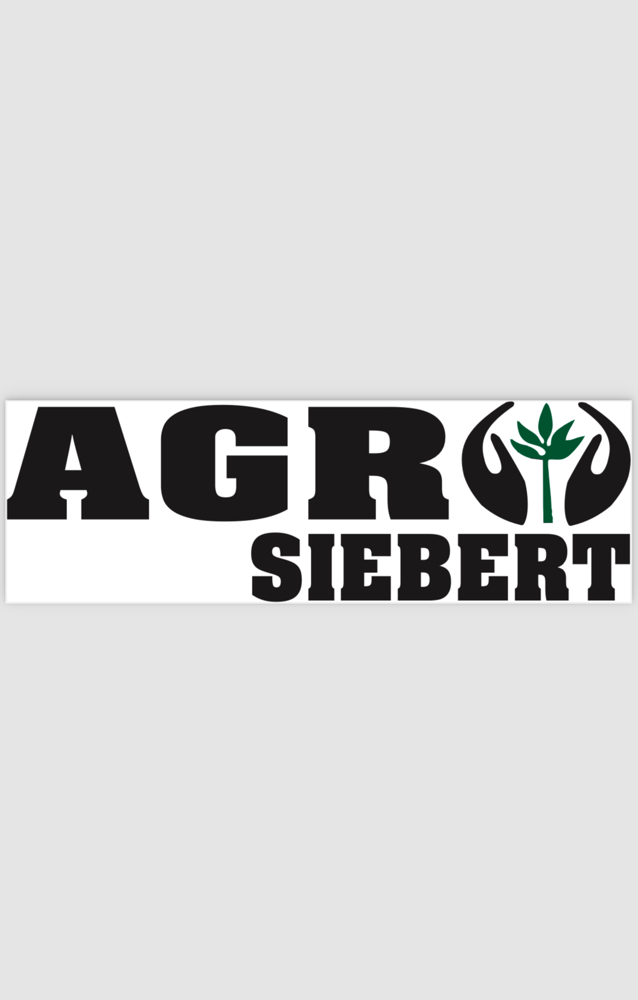

<!DOCTYPE html>
<html lang="en">
<head>
    <meta charset="UTF-8">
    <meta http-equiv="X-UA-compatible" content="IE=edge">
    <meta name="viewport" content="width=device-width, initial-scale=1.0">
    <title>HOME</title>
</head>
</html>
<body> 
    <header>
        
        <h1>AGRO SIEBERT</h1>
        <nav>
            <ul>
                <li><a href="140.jpeg"> produto</a></li>
            </ul>
        </nav>
        <P> Prestacoes de serviços agricolas</P>
        <p>video</p>
    </header>
    <main>
    <h2>historia da empresa</h2>
    <p>AGRO SIEBERT teve seu inicio no começo dos anos 2000, com o cultivo de soja e milho em terras propia e produção leitera.</p>
    <h3>sobre a empresa</h3>
    <p>hoje em dia nosso foco principal é a produçao de grãos, no Mato Grosso Do Sul</p>
    </main>
    <footer>
        <h4>contato</h4>
        <p>+55 45 93300-5209-Julia S.
           +55 45 98433-2337-Mauro S.
        </p>
    </footer>
</body>